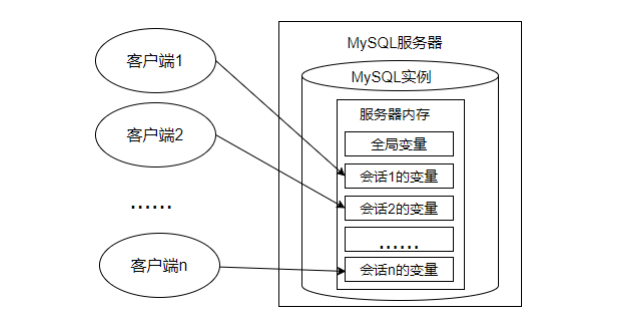

1. 变量
在MySQL数据库的存储过程和函数中，可以使用变量来存储查询或计算的中间结果数据，或者输出最终 的结果数据。 在 MySQL 数据库中，变量分为 系统变量 以及 用户自定义变量 。
1.1 系统变量
1.1.1 系统变量分类
变量由系统定义，不是用户定义，属于 服务器 层面。启动MySQL服务，生成MySQL服务实例期间， MySQL将为MySQL服务器内存中的系统变量赋值，这些系统变量定义了当前MySQL服务实例的属性、特 征。这些系统变量的值要么是 编译MySQL时参数 的默认值，要么是 配置文件 （例如my.ini等）中的参数 值。大家可以通过网址 https://dev.mysql.com/doc/refman/8.0/en/server-system-variables.html 查看MySQL文档的系统变量。
系统变量分为全局系统变量（需要添加 global 关键字）以及会话系统变量（需要添加 session 关键 字），有时也把全局系统变量简称为全局变量，有时也把会话系统变量称为local变量。如果不写，默认 会话级别。静态变量（在 MySQL 服务实例运行期间它们的值不能使用 set 动态修改）属于特殊的全局系 统变量。
每一个MySQL客户机成功连接MySQL服务器后，都会产生与之对应的会话。会话期间，MySQL服务实例 会在MySQL服务器内存中生成与该会话对应的会话系统变量，这些会话系统变量的初始值是全局系统变 量值的复制。如下图：

全局系统变量针对于所有会话（连接）有效，但
不能跨重启- 会话系统变量仅针对于当前会话（连接）有效。会话期间，当前会话对某个会话系统变量值的修 改，不会影响其他会话同一个会话系统变量的值。
- 会话1对某个全局系统变量值的修改会导致会话2中同一个全局系统变量值的修改。
在MySQL中有些系统变量只能是全局的，例如 max_connections 用于限制服务器的最大连接数；有些系 统变量作用域既可以是全局又可以是会话，例如 character_set_client 用于设置客户端的字符集；有些系 统变量的作用域只能是当前会话，例如 pseudo_thread_id 用于标记当前会话的 MySQL 连接 ID。
1.1.2 查看系统变量
查看所有或部分系统变量
#查看所有全局变量
SHOW GLOBAL VARIABLES;
#查看所有会话变量
SHOW SESSION VARIABLES;
或
SHOW VARIABLES;
#查看满足条件的部分系统变量。
SHOW GLOBAL VARIABLES LIKE '%标识符%';
#查看满足条件的部分会话变量
SHOW SESSION VARIABLES LIKE '%标识符%';
举例：
SHOW GLOBAL VARIABLES LIKE 'admin_%';
查看指定系统变量
作为 MySQL 编码规范，MySQL 中的系统变量以 两个“@” 开头，其中“@@global”仅用于标记全局系统变 量，“@@session”仅用于标记会话系统变量。“@@”首先标记会话系统变量，如果会话系统变量不存在， 则标记全局系统变量。
#查看指定的系统变量的值
SELECT @@global.变量名;
#查看指定的会话变量的值
SELECT @@session.变量名;
#或者
SELECT @@变量名;
修改系统变量的值
有些时候，数据库管理员需要修改系统变量的默认值，以便修改当前会话或者MySQL服务实例的属性、 特征。具体方法：
- 方式1：修改MySQL 配置文件 ，继而修改MySQL系统变量的值（该方法需要重启MySQL服务）
- 方式2：在MySQL服务运行期间，使用“set”命令重新设置系统变量的值
#为某个系统变量赋值
#方式1：
SET @@global.变量名=变量值;
#方式2：
SET GLOBAL 变量名=变量值;
#为某个会话变量赋值
#方式1：
SET @@session.变量名=变量值;
#方式2：
SET SESSION 变量名=变量值;
举例：
SELECT @@global.autocommit;
SET GLOBAL autocommit=0;
SELECT @@session.tx_isolation;
SET @@session.tx_isolation='read-uncommitted';
SET GLOBAL max_connections = 1000;
SELECT @@global.max_connections;
1.2 用户变量
1.2.1 用户变量分类
用户变量是用户自己定义的，作为 MySQL 编码规范，MySQL 中的用户变量以 一个“@” 开头。根据作用 范围不同，又分为 会话用户变量 和 局部变量 。
会话用户变量：作用域和会话变量一样，只对 当前连接 会话有效。局部变量：只在 BEGIN 和 END 语句块中有效。局部变量只能在 存储过程和函数 中使用。
1.2.2 会话用户变量
变量的定义
#方式1：“=”或“:=”
SET @用户变量 = 值;
SET @用户变量 := 值;
#方式2：“:=” 或 INTO关键字
SELECT @用户变量 := 表达式 [FROM 等子句];
SELECT 表达式 INTO @用户变量 [FROM 等子句];
查看用户变量的值 （查看、比较、运算等）
SELECT @用户变量
举例
SET @a = 1;
SELECT @a;
SELECT @num := COUNT(*) FROM employees;
SELECT @num;
SELECT AVG(salary) INTO @avgsalary FROM employees;
SELECT @avgsalary;
SELECT @big; #查看某个未声明的变量时，将得到NULL值
1.2.3 局部变量
定义：可以使用 DECLARE 语句定义一个局部变量
作用域：仅仅在定义它的 BEGIN … END 中有效
位置：只能放在 BEGIN … END 中，而且只能放在第一句
BEGIN
#声明局部变量
DECLARE 变量名1 变量数据类型 [DEFAULT 变量默认值];
DECLARE 变量名2,变量名3,... 变量数据类型 [DEFAULT 变量默认值];
#为局部变量赋值
SET 变量名1 = 值;
SELECT 值 INTO 变量名2 [FROM 子句];
#查看局部变量的值
SELECT 变量1,变量2,变量3;
END
1.定义变量
DECLARE 变量名 类型 [default 值]; # 如果没有DEFAULT子句，初始值为NULL
举例：
DECLARE myparam INT DEFAULT 100;
2.变量赋值
方式1：一般用于赋简单的值
SET 变量名=值;
SET 变量名:=值;
方式2：一般用于赋表中的字段值
SELECT 字段名或表达式 INTO 变量名 FROM 表;
3.使用变量（查看、比较、运算等）
SELECT 局部变量名;
举例1：声明局部变量，并分别赋值为employees表中employee_id为102的last_name和salary
DELIMITER //
CREATE PROCEDURE set_value()
BEGIN
DECLARE emp_name VARCHAR(25);
DECLARE sal DOUBLE(10,2);
SELECT last_name,salary INTO emp_name,sal
FROM employees
WHERE employee_id = 102;
SELECT emp_name,sal;
END //
DELIMITER ;
举例2：声明两个变量，求和并打印 （分别使用会话用户变量、局部变量的方式实现）
#方式1：使用用户变量
SET @m=1;
SET @n=1;
SET @sum=@m+@n;
SELECT @sum;
#方式2：使用局部变量
DELIMITER //
CREATE PROCEDURE add_value()
BEGIN
#局部变量
DECLARE m INT DEFAULT 1;
DECLARE n INT DEFAULT 3;
DECLARE SUM INT;
SET SUM = m+n;
SELECT SUM;
END //
DELIMITER ;
举例3：创建存储过程“different_salary”查询某员工和他领导的薪资差距，并用IN参数emp_id接收员工 id，用OUT参数dif_salary输出薪资差距结果。
#声明
DELIMITER //
CREATE PROCEDURE different_salary(IN emp_id INT,OUT dif_salary DOUBLE)
BEGIN
#声明局部变量
DECLARE emp_sal,mgr_sal DOUBLE DEFAULT 0.0;
DECLARE mgr_id INT;
SELECT salary INTO emp_sal FROM employees WHERE employee_id = emp_id;
SELECT manager_id INTO mgr_id FROM employees WHERE employee_id = emp_id;
SELECT salary INTO mgr_sal FROM employees WHERE employee_id = mgr_id;
SET dif_salary = mgr_sal - emp_sal;
END //
DELIMITER ;
#调用
SET @emp_id = 102;
CALL different_salary(@emp_id,@diff_sal);
#查看
SELECT @diff_sal;
1.2.4 对比会话用户变量与局部变量
| 作用域 | 定义位置 | 语法 | |
|---|---|---|---|
| 会话用户变量 | 当前会话 | 会话的任何地方 | 加@符号，不用指定类型 |
| 局部变量 | 定义它的BEGIN AND 中 | BEGIN END的第一句话 | 一般不加@，需要指定类型 |
2. 定义条件与处理程序
定义条件 是事先定义程序执行过程中可能遇到的问题， 处理程序定义了在遇到问题时应当采取的处理方 式，并且保证存储过程或函数在遇到警告或错误时能继续执行。这样可以增强存储程序处理问题的能 力，避免程序异常停止运行。 说明：定义条件和处理程序在存储过程、存储函数中都是支持的。
2.1 案例分析
案例分析：创建一个名称为“UpdateDataNoCondition”的存储过程。代码如下：
DELIMITER //
CREATE PROCEDURE UpdateDataNoCondition()
BEGIN
SET @x = 1;
UPDATE employees SET email = NULL WHERE last_name = 'Abel';
SET @x = 2;
UPDATE employees SET email = 'aabbel' WHERE last_name = 'Abel';
SET @x = 3;
END //
DELIMITER ;
调用存储过程：
mysql> CALL UpdateDataNoCondition();
ERROR 1048 (23000): Column 'email' cannot be null
mysql> SELECT @x;
+------+
| @x |
+------+
| 1 |
+------+
1 row in set (0.00 sec)
可以看到，此时@x变量的值为1。结合创建存储过程的SQL语句代码可以得出：在存储过程中未定义条件 和处理程序，且当存储过程中执行的SQL语句报错时，MySQL数据库会抛出错误，并退出当前SQL逻辑， 不再向下继续执行。
2.2 定义条件
定义条件就是给MySQL中的错误码命名，这有助于存储的程序代码更清晰。它将一个 错误名字 和 指定的 错误条件 关联起来。这个名字可以随后被用在定义处理程序的 DECLARE HANDLER 语句中。 定义条件使用DECLARE语句，语法格式如下：
DECLARE 错误名称 CONDITION FOR 错误码（或错误条件）
错误码的说明：
- MySQL_error_code 和 sqlstate_value 都可以表示MySQL的错误。
- MySQL_error_code是数值类型错误代码。
- sqlstate_value是长度为5的字符串类型错误代码。
- 例如，在ERROR 1418 (HY000)中，1418是MySQL_error_code，’HY000’是sqlstate_value。
- 例如，在ERROR 1142（42000）中，1142是MySQL_error_code，’42000’是sqlstate_value。
举例1：定义“Field_Not_Be_NULL”错误名与MySQL中违反非空约束的错误类型是“ERROR 1048 (23000)”对 应。
#使用MySQL_error_code
DECLARE Field_Not_Be_NULL CONDITION FOR 1048;
#使用sqlstate_value
DECLARE Field_Not_Be_NULL CONDITION FOR SQLSTATE '23000';
举例2：定义”ERROR 1148(42000)”错误，名称为command_not_allowed。
#使用MySQL_error_code
DECLARE command_not_allowed CONDITION FOR 1148;
#使用sqlstate_value
DECLARE command_not_allowed CONDITION FOR SQLSTATE '42000';
2.3 定义处理程序
可以为SQL执行过程中发生的某种类型的错误定义特殊的处理程序。定义处理程序时，使用DECLARE语句 的语法如下：
DECLARE 处理方式 HANDLER FOR 错误类型 处理语句
处理方式：处理方式有3个取值：CONTINUE、EXIT、UNDO。
- CONTINUE ：表示遇到错误不处理，继续执行。
- EXIT ：表示遇到错误马上退出。
- UNDO ：表示遇到错误后撤回之前的操作。MySQL中暂时不支持这样的操作。
错误类型（即条件）可以有如下取值：
- SQLSTATE ‘字符串错误码’ ：表示长度为5的sqlstate_value类型的错误代码；
- MySQL_error_code ：匹配数值类型错误代码；
- 错误名称 ：表示DECLARE … CONDITION定义的错误条件名称。
- SQLWARNING ：匹配所有以01开头的SQLSTATE错误代码；
- NOT FOUND ：匹配所有以02开头的SQLSTATE错误代码；
- SQLEXCEPTION ：匹配所有没有被SQLWARNING或NOT FOUND捕获的SQLSTATE错误代码；
处理语句：如果出现上述条件之一，则采用对应的处理方式，并执行指定的处理语句。语句可以是 像“ SET 变量 = 值 ”这样的简单语句，也可以是使用 BEGIN … END 编写的复合语句。
定义处理程序的几种方式，代码如下：
#方法1：捕获sqlstate_value
DECLARE CONTINUE HANDLER FOR SQLSTATE '42S02' SET @info = 'NO_SUCH_TABLE';
#方法2：捕获mysql_error_value
DECLARE CONTINUE HANDLER FOR 1146 SET @info = 'NO_SUCH_TABLE';
#方法3：先定义条件，再调用
DECLARE no_such_table CONDITION FOR 1146;
DECLARE CONTINUE HANDLER FOR NO_SUCH_TABLE SET @info = 'NO_SUCH_TABLE';
#方法4：使用SQLWARNING
DECLARE EXIT HANDLER FOR SQLWARNING SET @info = 'ERROR';
#方法5：使用NOT FOUND
DECLARE EXIT HANDLER FOR NOT FOUND SET @info = 'NO_SUCH_TABLE';
#方法6：使用SQLEXCEPTION
DECLARE EXIT HANDLER FOR SQLEXCEPTION SET @info = 'ERROR';
2.4 案例解决
在存储过程中，定义处理程序，捕获sqlstate_value值，当遇到MySQL_error_code值为1048时，执行 CONTINUE操作，并且将@proc_value的值设置为-1。
DELIMITER //
CREATE PROCEDURE UpdateDataNoCondition()
BEGIN
#定义处理程序
DECLARE CONTINUE HANDLER FOR 1048 SET @proc_value = -1;
SET @x = 1;
UPDATE employees SET email = NULL WHERE last_name = 'Abel';
SET @x = 2;
UPDATE employees SET email = 'aabbel' WHERE last_name = 'Abel';
SET @x = 3;
END //
DELIMITER ;
调用过程：
mysql> CALL UpdateDataWithCondition();
Query OK, 0 rows affected (0.01 sec)
mysql> SELECT @x,@proc_value;
+------+-------------+
| @x | @proc_value |
+------+-------------+
| 3 | -1 |
+------+-------------+
1 row in set (0.00 sec)
举例：
创建一个名称为“InsertDataWithCondition”的存储过程，代码如下。
在存储过程中，定义处理程序，捕获sqlstate_value值，当遇到sqlstate_value值为23000时，执行EXIT操 作，并且将@proc_value的值设置为-1。
#准备工作
CREATE TABLE departments
AS
SELECT * FROM atguigudb.`departments`;
ALTER TABLE departments
ADD CONSTRAINT uk_dept_name UNIQUE(department_id);
DELIMITER //
CREATE PROCEDURE InsertDataWithCondition()
BEGIN
DECLARE duplicate_entry CONDITION FOR SQLSTATE '23000' ;
DECLARE EXIT HANDLER FOR duplicate_entry SET @proc_value = -1;
SET @x = 1;
INSERT INTO departments(department_name) VALUES('测试');
SET @x = 2;
INSERT INTO departments(department_name) VALUES('测试');
SET @x = 3;
END //
DELIMITER ;
调用存储过程：
mysql> CALL InsertDataWithCondition();
Query OK, 0 rows affected (0.01 sec)
mysql> SELECT @x,@proc_value;
+------+-------------+
| @x | @proc_value |
+------+-------------+
| 2 | -1 |
+------+-------------+
1 row in set (0.00 sec)
3. 流程控制
解决复杂问题不可能通过一个 SQL 语句完成，我们需要执行多个 SQL 操作。流程控制语句的作用就是控 制存储过程中 SQL 语句的执行顺序，是我们完成复杂操作必不可少的一部分。只要是执行的程序，流程 就分为三大类：
- 顺序结构 ：程序从上往下依次执行
- 分支结构 ：程序按条件进行选择执行，从两条或多条路径中选择一条执行
- 循环结构 ：程序满足一定条件下，重复执行一组语句
针对于MySQL 的流程控制语句主要有 3 类。注意：只能用于存储程序。
- 条件判断语句 ：IF 语句和 CASE 语句
- 循环语句 ：LOOP、WHILE 和 REPEAT 语句
- 跳转语句 ：ITERATE 和 LEAVE 语句
3.1 分支结构之 IF
IF 语句的语法结构是：
IF 表达式1 THEN 操作1
[ELSEIF 表达式2 THEN 操作2]……
[ELSE 操作N]
END IF
根据表达式的结果为TRUE或FALSE执行相应的语句。这里“[]”中的内容是可选的。
特点：① 不同的表达式对应不同的操作 ② 使用在begin end中
举例1：
IF val IS NULL
THEN SELECT 'val is null';
ELSE SELECT 'val is not null';
END IF;
举例2：声明存储过程“update_salary_by_eid1”，定义IN参数emp_id，输入员工编号。判断该员工 薪资如果低于8000元并且入职时间超过5年，就涨薪500元；否则就不变。
DELIMITER //
CREATE PROCEDURE update_salary_by_eid1(IN emp_id INT)
BEGIN
DECLARE emp_salary DOUBLE;
DECLARE hire_year DOUBLE;
SELECT salary INTO emp_salary FROM employees WHERE employee_id = emp_id;
SELECT DATEDIFF(CURDATE(),hire_date)/365 INTO hire_year
FROM employees WHERE employee_id = emp_id;
IF emp_salary < 8000 AND hire_year > 5
THEN UPDATE employees SET salary = salary + 500 WHERE employee_id = emp_id;
END IF;
END //
DELIMITER ;
举例3：声明存储过程“update_salary_by_eid2”，定义IN参数emp_id，输入员工编号。判断该员工 薪资如果低于9000元并且入职时间超过5年，就涨薪500元；否则就涨薪100元。
DELIMITER //
CREATE PROCEDURE update_salary_by_eid2(IN emp_id INT)
BEGIN
DECLARE emp_salary DOUBLE;
DECLARE hire_year DOUBLE;
SELECT salary INTO emp_salary FROM employees WHERE employee_id = emp_id;
SELECT DATEDIFF(CURDATE(),hire_date)/365 INTO hire_year
FROM employees WHERE employee_id = emp_id;
IF emp_salary < 8000 AND hire_year > 5
THEN UPDATE employees SET salary = salary + 500 WHERE employee_id =
emp_id;
ELSE
UPDATE employees SET salary = salary + 100 WHERE employee_id = emp_id;
END IF;
END //
DELIMITER ;
举例4：声明存储过程“update_salary_by_eid3”，定义IN参数emp_id，输入员工编号。判断该员工 薪资如果低于9000元，就更新薪资为9000元；薪资如果大于等于9000元且低于10000的，但是奖金 比例为NULL的，就更新奖金比例为0.01；其他的涨薪100元。
DELIMITER //
CREATE PROCEDURE update_salary_by_eid3(IN emp_id INT)
BEGIN
DECLARE emp_salary DOUBLE;
DECLARE bonus DECIMAL(3,2);
SELECT salary INTO emp_salary FROM employees WHERE employee_id = emp_id;
SELECT commission_pct INTO bonus FROM employees WHERE employee_id = emp_id;
IF emp_salary < 9000
THEN UPDATE employees SET salary = 9000 WHERE employee_id = emp_id;
DELIMITER //
CREATE PROCEDURE update_salary_by_eid3(IN emp_id INT)
BEGIN
DECLARE emp_salary DOUBLE;
DECLARE bonus DECIMAL(3,2);
SELECT salary INTO emp_salary FROM employees WHERE employee_id = emp_id;
SELECT commission_pct INTO bonus FROM employees WHERE employee_id = emp_id;
IF emp_salary < 9000
THEN UPDATE employees SET salary = 9000 WHERE employee_id = emp_id;
3.2 分支结构之 CASE
CASE 语句的语法结构1：
#情况一：类似于switch
CASE 表达式
WHEN 值1 THEN 结果1或语句1(如果是语句，需要加分号)
WHEN 值2 THEN 结果2或语句2(如果是语句，需要加分号)
...
ELSE 结果n或语句n(如果是语句，需要加分号)
END [case]（如果是放在begin end中需要加上case，如果放在select后面不需要）
CASE 语句的语法结构2：
#情况二：类似于多重if
CASE
WHEN 条件1 THEN 结果1或语句1(如果是语句，需要加分号)
WHEN 条件2 THEN 结果2或语句2(如果是语句，需要加分号)
...
ELSE 结果n或语句n(如果是语句，需要加分号)
END [case]（如果是放在begin end中需要加上case，如果放在select后面不需要）
举例1：
使用CASE流程控制语句的第1种格式，判断val值等于1、等于2，或者两者都不等。
CASE val
WHEN 1 THEN SELECT 'val is 1';
WHEN 2 THEN SELECT 'val is 2';
ELSE SELECT 'val is not 1 or 2';
END CASE;
举例2：
使用CASE流程控制语句的第2种格式，判断val是否为空、小于0、大于0或者等于0。
CASE
WHEN val IS NULL THEN SELECT 'val is null';
WHEN val < 0 THEN SELECT 'val is less than 0';
WHEN val > 0 THEN SELECT 'val is greater than 0';
ELSE SELECT 'val is 0';
END CASE;
举例3：
声明存储过程“update_salary_by_eid4”，定义IN参数emp_id，输入员工编号。判断该员工 薪资如果低于9000元，就更新薪资为9000元；薪资大于等于9000元且低于10000的，但是奖金比例 为NULL的，就更新奖金比例为0.01；其他的涨薪100元。
DELIMITER //
CREATE PROCEDURE update_salary_by_eid4(IN emp_id INT)
BEGIN
DECLARE emp_sal DOUBLE;
DECLARE bonus DECIMAL(3,2);
SELECT salary INTO emp_sal FROM employees WHERE employee_id = emp_id;
SELECT commission_pct INTO bonus FROM employees WHERE employee_id = emp_id;
CASE
WHEN emp_sal<9000
THEN UPDATE employees SET salary=9000 WHERE employee_id = emp_id;
WHEN emp_sal<10000 AND bonus IS NULL
THEN UPDATE employees SET commission_pct=0.01 WHERE employee_id = emp_id;
ELSE
UPDATE employees SET salary=salary+100 WHERE employee_id = emp_id;
END CASE;
END //
DELIMITER ;
举例4：声明存储过程update_salary_by_eid5，定义IN参数emp_id，输入员工编号。判断该员工的 入职年限，如果是0年，薪资涨50；如果是1年，薪资涨100；如果是2年，薪资涨200；如果是3年， 薪资涨300；如果是4年，薪资涨400；其他的涨薪500。
DELIMITER //
CREATE PROCEDURE update_salary_by_eid5(IN emp_id INT)
BEGIN
DECLARE emp_sal DOUBLE;
DECLARE hire_year DOUBLE;
SELECT salary INTO emp_sal FROM employees WHERE employee_id = emp_id;
SELECT ROUND(DATEDIFF(CURDATE(),hire_date)/365) INTO hire_year FROM employees
WHERE employee_id = emp_id;
CASE hire_year
WHEN 0 THEN UPDATE employees SET salary=salary+50 WHERE employee_id = emp_id;
WHEN 1 THEN UPDATE employees SET salary=salary+100 WHERE employee_id = emp_id;
WHEN 2 THEN UPDATE employees SET salary=salary+200 WHERE employee_id = emp_id;
WHEN 3 THEN UPDATE employees SET salary=salary+300 WHERE employee_id = emp_id;
WHEN 4 THEN UPDATE employees SET salary=salary+400 WHERE employee_id = emp_id;
ELSE UPDATE employees SET salary=salary+500 WHERE employee_id = emp_id;
END CASE;
END //
DELIMITER ;
3.3 循环结构之LOOP
LOOP循环语句用来重复执行某些语句。LOOP内的语句一直重复执行直到循环被退出（使用LEAVE子 句），跳出循环过程。 LOOP语句的基本格式如下：
[loop_label:] LOOP
循环执行的语句
END LOOP [loop_label]
其中，loop_label表示LOOP语句的标注名称，该参数可以省略。
举例1： 使用LOOP语句进行循环操作，id值小于10时将重复执行循环过程。
DECLARE id INT DEFAULT 0;
add_loop:LOOP
SET id = id +1;
IF id >= 10 THEN LEAVE add_loop;
END IF;
END LOOP add_loop;
举例2：当市场环境变好时，公司为了奖励大家，决定给大家涨工资。声明存储过程 “update_salary_loop()”，声明OUT参数num，输出循环次数。存储过程中实现循环给大家涨薪，薪资涨为 原来的1.1倍。直到全公司的平均薪资达到12000结束。并统计循环次数。
DELIMITER //
CREATE PROCEDURE update_salary_loop(OUT num INT)
BEGIN
DECLARE avg_salary DOUBLE;
DECLARE loop_count INT DEFAULT 0;
SELECT AVG(salary) INTO avg_salary FROM employees;
label_loop:LOOP
IF avg_salary >= 12000 THEN LEAVE label_loop;
END IF;
UPDATE employees SET salary = salary * 1.1;
SET loop_count = loop_count + 1;
SELECT AVG(salary) INTO avg_salary FROM employees;
END LOOP label_loop;
SET num = loop_count;
END //
DELIMITER ;
3.4 循环结构之WHILE
WHILE语句创建一个带条件判断的循环过程。WHILE在执行语句执行时，先对指定的表达式进行判断，如 果为真，就执行循环内的语句，否则退出循环。WHILE语句的基本格式如下：
[while_label:] WHILE 循环条件 DO
循环体
END WHILE [while_label];
while_label为WHILE语句的标注名称；如果循环条件结果为真，WHILE语句内的语句或语句群被执行，直 至循环条件为假，退出循环。
举例1： WHILE语句示例，i值小于10时，将重复执行循环过程，代码如下：
DELIMITER //
CREATE PROCEDURE test_while()
BEGIN
DECLARE i INT DEFAULT 0;
WHILE i < 10 DO
SET i = i + 1;
END WHILE;
SELECT i;
END //
DELIMITER ;
#调用
CALL test_while();
举例2：市场环境不好时，公司为了渡过难关，决定暂时降低大家的薪资。声明存储过程 “update_salary_while()”，声明OUT参数num，输出循环次数。存储过程中实现循环给大家降薪，薪资降 为原来的90%。直到全公司的平均薪资达到5000结束。并统计循环次数。
DELIMITER //
CREATE PROCEDURE update_salary_while(OUT num INT)
BEGIN
DECLARE avg_sal DOUBLE ;
DECLARE while_count INT DEFAULT 0;
SELECT AVG(salary) INTO avg_sal FROM employees;
WHILE avg_sal > 5000 DO
UPDATE employees SET salary = salary * 0.9;
SET while_count = while_count + 1;
SELECT AVG(salary) INTO avg_sal FROM employees;
END WHILE;
SET num = while_count;
END //
DELIMITER ;
3.5 循环结构之REPEAT
REPEAT语句创建一个带条件判断的循环过程。与WHILE循环不同的是，REPEAT 循环首先会执行一次循 环，然后在 UNTIL 中进行表达式的判断，如果满足条件就退出，即 END REPEAT；如果条件不满足，则会 就继续执行循环，直到满足退出条件为止。 REPEAT语句的基本格式如下：
[repeat_label:] REPEAT
循环体的语句
UNTIL 结束循环的条件表达式
END REPEAT [repeat_label]
repeat_label为REPEAT语句的标注名称，该参数可以省略；REPEAT语句内的语句或语句群被重复，直至 expr_condition为真。
举例1：
DELIMITER //
CREATE PROCEDURE test_repeat()
BEGIN
DECLARE i INT DEFAULT 0;
REPEAT
SET i = i + 1;
UNTIL i >= 10
END REPEAT;
SELECT i;
END //
DELIMITER ;
举例2：当市场环境变好时，公司为了奖励大家，决定给大家涨工资。声明存储过程 “update_salary_repeat()”，声明OUT参数num，输出循环次数。存储过程中实现循环给大家涨薪，薪资涨 为原来的1.15倍。直到全公司的平均薪资达到13000结束。并统计循环次数。
DELIMITER //
CREATE PROCEDURE update_salary_repeat(OUT num INT)
BEGIN
DECLARE avg_sal DOUBLE ;
DECLARE repeat_count INT DEFAULT 0;
SELECT AVG(salary) INTO avg_sal FROM employees;
REPEAT
UPDATE employees SET salary = salary * 1.15;
SET repeat_count = repeat_count + 1;
SELECT AVG(salary) INTO avg_sal FROM employees;
UNTIL avg_sal >= 13000
END REPEAT;
SET num = repeat_count;
END //
DELIMITER ;
对比三种循环结构：
1、这三种循环都可以省略名称，但如果循环中添加了循环控制语句（LEAVE或ITERATE）则必须添加名 称。
2、 LOOP：一般用于实现简单的”死”循环 WHILE：先判断后执行 REPEAT：先执行后判断，无条件 至少执行一次
3.6 跳转语句之LEAVE语句
LEAVE语句：可以用在循环语句内，或者以 BEGIN 和 END 包裹起来的程序体内，表示跳出循环或者跳出 程序体的操作。如果你有面向过程的编程语言的使用经验，你可以把 LEAVE 理解为 break。 基本格式如下：
LEAVE 标记名
其中，label参数表示循环的标志。LEAVE和BEGIN … END或循环一起被使用。
举例1：创建存储过程 “leave_begin()”，声明INT类型的IN参数num。给BEGIN…END加标记名，并在 BEGIN…END中使用IF语句判断num参数的值。
- 如果num<=0，则使用LEAVE语句退出BEGIN…END；
- 如果num=1，则查询“employees”表的平均薪资；
- 如果num=2，则查询“employees”表的最低薪资；
- 如果num>2，则查询“employees”表的最高薪资。
IF语句结束后查询“employees”表的总人数。
DELIMITER //
CREATE PROCEDURE leave_begin(IN num INT)
begin_label: BEGIN
IF num<=0
THEN LEAVE begin_label;
ELSEIF num=1
THEN SELECT AVG(salary) FROM employees;
ELSEIF num=2
THEN SELECT MIN(salary) FROM employees;
ELSE
SELECT MAX(salary) FROM employees;
END IF;
SELECT COUNT(*) FROM employees;
END //
DELIMITER ;
举例2： 当市场环境不好时，公司为了渡过难关，决定暂时降低大家的薪资。声明存储过程“leave_while()”，声明 OUT参数num，输出循环次数，存储过程中使用WHILE循环给大家降低薪资为原来薪资的90%，直到全公 司的平均薪资小于等于10000，并统计循环次数。
DELIMITER //
CREATE PROCEDURE leave_while(OUT num INT)
BEGIN
#
DECLARE avg_sal DOUBLE;#记录平均工资
DECLARE while_count INT DEFAULT 0; #记录循环次数
SELECT AVG(salary) INTO avg_sal FROM employees; #① 初始化条件
while_label:WHILE TRUE DO #② 循环条件
#③ 循环体
IF avg_sal <= 10000 THEN
LEAVE while_label;
END IF;
UPDATE employees SET salary = salary * 0.9;
SET while_count = while_count + 1;
#④ 迭代条件
SELECT AVG(salary) INTO avg_sal FROM employees;
END WHILE;
#赋值
SET num = while_count;
END //
DELIMITER ;
3.7 跳转语句之ITERATE语句
ITERATE语句：只能用在循环语句（LOOP、REPEAT和WHILE语句）内，表示重新开始循环，将执行顺序 转到语句段开头处。如果你有面向过程的编程语言的使用经验，你可以把 ITERATE 理解为 continue，意 思为“再次循环”。 语句基本格式如下：
ITERATE label
label参数表示循环的标志。ITERATE语句必须跟在循环标志前面。
举例： 定义局部变量num，初始值为0。循环结构中执行num + 1操作。
- 如果num < 10，则继续执行循环；
- 如果num > 15，则退出循环结构；
DELIMITER //
CREATE PROCEDURE test_iterate()
BEGIN
DECLARE num INT DEFAULT 0;
my_loop:LOOP
SET num = num + 1;
IF num < 10
THEN ITERATE my_loop;
ELSEIF num > 15
THEN LEAVE my_loop;
END IF;
SELECT '尚硅谷：让天下没有难学的技术';
END LOOP my_loop;
END //
DELIMITER ;
4. 游标
4.1 什么是游标（或光标）
虽然我们也可以通过筛选条件 WHERE 和 HAVING，或者是限定返回记录的关键字 LIMIT 返回一条记录， 但是，却无法在结果集中像指针一样，向前定位一条记录、向后定位一条记录，或者是 随意定位到某一 条记录 ，并对记录的数据进行处理。
这个时候，就可以用到游标。游标，提供了一种灵活的操作方式，让我们能够对结果集中的每一条记录 进行定位，并对指向的记录中的数据进行操作的数据结构。游标让 SQL 这种面向集合的语言有了面向过 程开发的能力。
在 SQL 中，游标是一种临时的数据库对象，可以指向存储在数据库表中的数据行指针。这里游标 充当了 指针的作用 ，我们可以通过操作游标来对数据行进行操作。 MySQL中游标可以在存储过程和函数中使用。 比如，我们查询了 employees 数据表中工资高于15000的员工都有哪些：
SELECT employee_id,last_name,salary FROM employees
WHERE salary > 15000;

这里我们就可以通过游标来操作数据行，如图所示此时游标所在的行是“108”的记录，我们也可以在结果 集上滚动游标，指向结果集中的任意一行。
4.2 使用游标步骤
游标必须在声明处理程序之前被声明，并且变量和条件还必须在声明游标或处理程序之前被声明。 如果我们想要使用游标，一般需要经历四个步骤。不同的 DBMS 中，使用游标的语法可能略有不同。
第一步，声明游标
在MySQL中，使用DECLARE关键字来声明游标，其语法的基本形式如下：
DECLARE cursor_name CURSOR FOR select_statement;
这个语法适用于 MySQL，SQL Server，DB2 和 MariaDB。
如果是用 Oracle 或者 PostgreSQL，需要写成：
DECLARE cursor_name CURSOR IS select_statement;
要使用 SELECT 语句来获取数据结果集，而此时还没有开始遍历数据，这里 select_statement 代表的是 SELECT 语句，返回一个用于创建游标的结果集。
比如：
DECLARE cur_emp CURSOR FOR
SELECT employee_id,salary FROM employees;
DECLARE cursor_fruit CURSOR FOR
SELECT f_name, f_price FROM fruits ;
第二步，打开游标
打开游标的语法如下：
OPEN cursor_name
当我们定义好游标之后，如果想要使用游标，必须先打开游标。打开游标的时候 SELECT 语句的查询结 果集就会送到游标工作区，为后面游标的 逐条读取 结果集中的记录做准备。
OPEN cur_emp ;
第三步，使用游标（从游标中取得数据）
语法如下：
FETCH cursor_name INTO var_name [, var_name] ...
这句的作用是使用 cursor_name 这个游标来读取当前行，并且将数据保存到 var_name 这个变量中，游 标指针指到下一行。如果游标读取的数据行有多个列名，则在 INTO 关键字后面赋值给多个变量名即可。 注意：var_name必须在声明游标之前就定义好。
FETCH cur_emp INTO emp_id, emp_sal ;
注意：游标的查询结果集中的字段数，必须跟 INTO 后面的变量数一致，否则，在存储过程执行的时 候，MySQL 会提示错误。
第四步，关闭游标
CLOSE cursor_name
有 OPEN 就会有 CLOSE，也就是打开和关闭游标。当我们使用完游标后需要关闭掉该游标。因为游标会 占用系统资源 ，如果不及时关闭，游标会一直保持到存储过程结束，影响系统运行的效率。而关闭游标 的操作，会释放游标占用的系统资源。
关闭游标之后，我们就不能再检索查询结果中的数据行，如果需要检索只能再次打开游标。
CLOSE cur_emp;
4.3 举例
创建存储过程“get_count_by_limit_total_salary()”，声明IN参数 limit_total_salary，DOUBLE类型；声明 OUT参数total_count，INT类型。函数的功能可以实现累加薪资最高的几个员工的薪资值，直到薪资总和 达到limit_total_salary参数的值，返回累加的人数给total_count。
DELIMITER //
CREATE PROCEDURE get_count_by_limit_total_salary(IN limit_total_salary DOUBLE,OUT
total_count INT)
BEGIN
DECLARE sum_salary DOUBLE DEFAULT 0; #记录累加的总工资
DECLARE cursor_salary DOUBLE DEFAULT 0; #记录某一个工资值
DECLARE emp_count INT DEFAULT 0; #记录循环个数
#定义游标
DECLARE emp_cursor CURSOR FOR SELECT salary FROM employees ORDER BY salary DESC;
#打开游标
OPEN emp_cursor;
REPEAT
#使用游标（从游标中获取数据）
FETCH emp_cursor INTO cursor_salary;
SET sum_salary = sum_salary + cursor_salary;
SET emp_count = emp_count + 1;
UNTIL sum_salary >= limit_total_salary
END REPEAT;
SET total_count = emp_count;
#关闭游标
CLOSE emp_cursor;
END //
DELIMITER ;
4.4小结
游标是 MySQL 的一个重要的功能，为 逐条读取 结果集中的数据，提供了完美的解决方案。跟在应用层 面实现相同的功能相比，游标可以在存储程序中使用，效率高，程序也更加简洁。 但同时也会带来一些性能问题，比如在使用游标的过程中，会对数据行进行 加锁 ，这样在业务并发量大 的时候，不仅会影响业务之间的效率，还会 消耗系统资源 ，造成内存不足，这是因为游标是在内存中进 行的处理。 建议：养成用完之后就关闭的习惯，这样才能提高系统的整体效率。
补充：MySQL 8.0的新特性—全局变量的持久化
在MySQL数据库中，全局变量可以通过SET GLOBAL语句来设置。例如，设置服务器语句超时的限制，可 以通过设置系统变量max_execution_time来实现：
SET GLOBAL MAX_EXECUTION_TIME=2000;
使用SET GLOBAL语句设置的变量值只会 临时生效 。 数据库重启后，服务器又会从MySQL配置文件中读取变量的默认值。 MySQL 8.0版本新增了 SET PERSIST 命令。例如，设置服务器的最大连接数为1000：
SET PERSIST global max_connections = 1000;
MySQL会将该命令的配置保存到数据目录下的 mysqld-auto.cnf 文件中，下次启动时会读取该文件，用 其中的配置来覆盖默认的配置文件。
举例： 查看全局变量max_connections的值，结果如下：
mysql> show variables like '%max_connections%';
+------------------------+-------+
| Variable_name | Value |
+------------------------+-------+
| max_connections | 151 |
| mysqlx_max_connections | 100 |
+------------------------+-------+
2 rows in set, 1 warning (0.00 sec)
设置全局变量max_connections的值：
mysql> set persist max_connections=1000;
Query OK, 0 rows affected (0.00 sec)
重启MySQL服务器 ，再次查询max_connections的值：
mysql> show variables like '%max_connections%';
+------------------------+-------+
| Variable_name | Value |
+------------------------+-------+
| max_connections | 1000 |
| mysqlx_max_connections | 100 |
+------------------------+-------+
2 rows in set, 1 warning (0.00 sec)
5.课后练习
1.创建函数get_count()，返回公司的员工个数
DELIMITER $
CREATE FUNCTION get_count()
RETURNS INT
BEGIN
# 声明变量
DECLARE emp_count INT;
# 赋值
SELECT COUNT(*) INTO emp_count FROM employees
RETURN emp_count;
END $
DELIMITER ;
调用
SELECT get_count();
2.创建函数ename_salary()，根据员工姓名，返回它的工资
DELIMITER $
CREATE FUNCTION ename_salary(emp_name VARCHAR(15))
RETURN DOUBLE
BEGIN
# 声明变量，定义一个会话用户变量
SET @sal = 0;
# 赋值
SELECT salary INTO @sal FROM employees WHERE last_name = emp_name
RETURN @sal;
END $
DELIMITER ;
调用
SELECT ename_salary('Abel')
3.创建函数dept_sal()，根据部门名，返回该部门的平均工资
DELIMITER //
CREATE FUNCTION dept_sal(dept_name VARCHAR(15))
RETURNS DOUBLE
BEGIN
DECLARE avg_sal DOUBLE;
SELECT AVG(salary) INTO avg_sal
FROM employees e JOIN departments d
ON e.department_id = d.department_id
WHERE d.department_name = dept_name;
RETURN avg_sal;
END //
DELIMITER ;
调用
SELECT dept_sal('Marketing');
4.创建函数add_float()，实现传入两个float，返回二者之和
DELIMITER //
CREATE FUNCTION add_float(value1 FLOAT,value2 FLOAT)
RETURNS FLOAT
BEGIN
DECLARE sun_val FLOAT;
SET sum_val = value1 + value2;
RETURN sum_val;
END //
DELIMITER ;
调用
SET @V1 :=12.2;
SET @V2 = 2.3;
SELECT add_float(@v1,@v2);
5.创建函数test_if_case()，实现传入成绩，如果成绩>90，返回A；如果成绩大于80，返回B；如果成绩大于60，返回C，否则返回D。要求分别使用if结构和case结构实现。
DELIMITER $
CREATE FUNCTION test_if_case1(score DOUBLE)
RETURNS CHAR
BEGIN
DECLARE score_level CHAR;
IF score >90
THEN SET score_level = 'A';
IF score >80
THEN SET score_level = 'B';
IF score >60
THEN SET score_level = 'C';
ELSE
SET score_level = 'D';
END IF;
RETURNS score_level;
END $
DELIMITER ;
调用
SELECT test_if_case1(56);
6.游标的使用。创建存储过程update_salary()
参数1为IN的INT类型变量dept_id，表示部门id；
参数2为IN的INT类型变量change_sal_count，表示要调整薪资的员工个数。
查询指定id部门的员工，按照salary升序排列，根据hire_date的情况，调整前change_sal_count个员工的薪资，详情如下。
DELIMITER $
CREATE PROCEDURE update_salary(IN dept_id INT,IN change_sal_count INT)
BEGIN
# 声明变量
DECLARE emp_id INT;
DECLARE emp_hire_date DATE;
DECLARE init_count INT DEFAULT 1;
DECLARE add_sal_rate DOUBLE;
# 声明游标
DECLARE emp_cursor cursor FOR select employee_id hire_date FROM employees
WHERE department_id = dept_id ORDER BY salary ASC;
# 打开游标
OPEN emp_cursor;
WHILE init_count <= change_sal_count DO
# 使用游标
FETCH emp_cursor INTO emp_id,emp_hire_date;
IF(YEAR(emp_hire_date)<1995)
THEN SET add_sal_rate=1.2;
ELSEIF(YEAR(emp_hire_date)<1998)
THEN SET add_sal_rate=1.15;
ELSEIF(YEAR(emp_hire_date)<2001)
THEN SET add_sal_rate=1.10;
ELSE
SET add_sal_rate=1.05;
END IF ;
# 涨薪操作
UPDATE employees SET salary * add_sal_rate
WHERE employee_id =emp_id;
# 迭代条件的更新
SET init_count = init_count+1;
END WHILE;
CLOSE emp_cursor;
END $
DELIMITER ;
调用
SELECT update_salary(50,2)